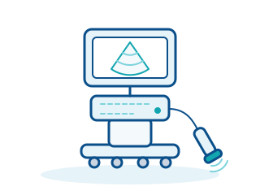
جهاز الموجات فوق الصوتية (السونار)
تصوير بالموجات الصوتية – من دون إشعاع
تُنتج أجهزة الموجات فوق الصوتية صورًا آنية للأعضاء والأوعية والأنسجة الرخوة باستخدام موجات صوتية عالية التردد – من دون إشعاع ومباشرةً بجانب سرير المريض.
التقنيات الطبية بشرح مبسّط – مرتّبة حسب الفئات، وقابلة للبحث، ومقتصرة على الأساسيات. اختاروا فئة أو ابحثوا مباشرة عن جهاز.
يُحفظ التقدّم محليًا في متصفحكم فقط. التالي: جهاز الموجات فوق الصوتية (السونار)
تُشكّل أجهزة التصوير الأساس للتشخيص وتخطيط العلاج ومتابعة مسار المرض من دون فتح الجسم. وتختلف هذه التقنيات اختلافًا كبيرًا في مبدأ العمل والتعرض للإشعاع ومتطلبات المساحة والإنشاء وتكاليف التشغيل. يشرح هذا القسم أهم أنواع الأجهزة بلغة مبسطة ويبيّن ما يهم عند الاختيار والشراء.

تصوير بالموجات الصوتية – من دون إشعاع
تُنتج أجهزة الموجات فوق الصوتية صورًا آنية للأعضاء والأوعية والأنسجة الرخوة باستخدام موجات صوتية عالية التردد – من دون إشعاع ومباشرةً بجانب سرير المريض.
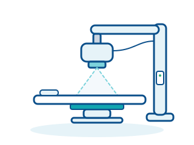
تصوير شعاعي إسقاطي بكاشف رقمي
تستخدم أنظمة الأشعة السينية الرقمية الإشعاع السيني لإنتاج صور إسقاطية للعظام والرئتين وغيرها من البنى؛ ويوفر الكاشف اللوحي المسطح الصورة على الشاشة خلال ثوانٍ.
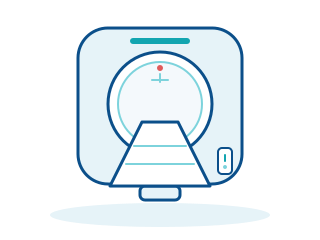
صور مقطعية من أشعة سينية دوّارة
يُنشئ جهاز التصوير المقطعي المحوسب من إسقاطات كثيرة للأشعة السينية صورًا مقطعية خالية من التراكب ونماذج ثلاثية الأبعاد للجسم – بسرعة وبتفاصيل دقيقة، مثلًا في السكتة الدماغية والإصابات وتشخيص الأورام.
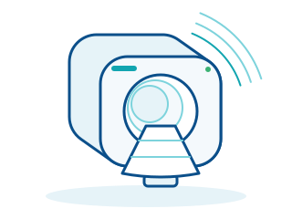
صور مقطعية بالمجال المغناطيسي وموجات الراديو
يصوّر جهاز الرنين المغناطيسي الأنسجة الرخوة والدماغ والمفاصل والأعضاء من دون أشعة سينية – باستخدام مجال مغناطيسي قوي وموجات راديوية وتباين ممتاز للأنسجة الرخوة.
يشمل التشخيص المخبري الأجهزة التي تحلل عينات الجسم مثل الدم أو المصل أو البول بشكل آلي. وتدعم النتائج الأطباء في التشخيص ومتابعة العلاج والوقاية. وتتراوح الأنظمة النموذجية من الأجهزة المدمجة الخاصة بالعيادات إلى المحللات الآلية بالكامل في المختبرات الكبيرة.

عدّ خلايا الدم وتصنيفها آلياً
يقوم محلل أمراض الدم بعدّ خلايا الدم وتصنيفها، ويُنتج صورة دم كاملة (CBC) مع عدّ تفريقي أو من دونه خلال دقائق معدودة. وهو جزء من التجهيزات الأساسية لكل مختبر طبي تقريباً.
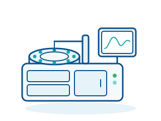
قيم الأيض من المصل والبلازما والبول
يقيس محلل الكيمياء السريرية تراكيز مواد مثل الغلوكوز والشوارد (الإلكتروليتات) والإنزيمات والكوليسترول في المصل أو البلازما أو البول. ويوفر الأساس لتقييم وظائف الأعضاء والأيض.
قياس pH والأكسجين وثاني أكسيد الكربون في دقائق
يقيس محلل غازات الدم خلال دقائق معدودة الأس الهيدروجيني (pH) والضغط الجزئي للأكسجين وثاني أكسيد الكربون، إضافة إلى الشوارد والمستقلبات في الدم. وهو جهاز لا غنى عنه لمراقبة المرضى في الحالات الحرجة والمرضى الخاضعين للتنفس الاصطناعي.
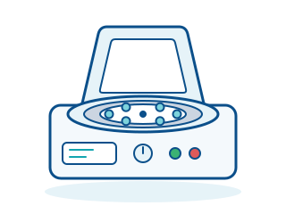
فصل العينات بقوة الطرد المركزي
يفصل جهاز الطرد المركزي المخبري الدم والسوائل الأخرى إلى مكوناتها، مثل الخلايا والبلازما، عن طريق الدوران السريع. وهو جهاز تحضير لا غنى عنه لكل تحليل مخبري تقريباً.
تشمل مراقبة المرضى الأجهزة التي تقيس وتعرض باستمرار معدل ضربات القلب وضغط الدم وتشبّع الأكسجين والتنفس وغيرها من العلامات الحيوية. وهي تُظهر التغيرات الحرجة قبل أن تتحول إلى حالات طارئة، وتشكّل أساس القرارات في العناية المركزة وغرف العمليات وقسم الطوارئ، وبشكل متزايد في العيادات والرعاية التمريضية. ويمتد نطاقها من المراقبة متعددة المعايير إلى مستشعر الإصبع البسيط.
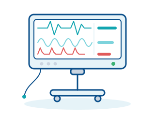
مراقبة متعددة المعايير للوظائف الحيوية
يسجّل جهاز مراقبة المريض عدة علامات حيوية في آن واحد، ويعرضها على شكل منحنيات وقيم رقمية، ويطلق إنذاراً عند تجاوز الحدود المضبوطة. وهو جهاز المراقبة المركزي في وحدات العناية المركزة وغرف العمليات وأقسام الطوارئ.
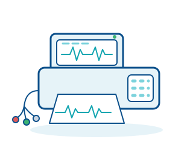
تسجيل النشاط الكهربائي للقلب
يسجّل جهاز تخطيط القلب ذو 12 قناة النشاط الكهربائي للقلب عبر عشرة أقطاب كهربائية ويعرضه في اثني عشر اتجاهاً (Lead). وهو الإجراء القياسي لتشخيص اضطرابات نظم القلب واضطرابات تروية عضلة القلب.
تشبّع الأكسجين والنبض دون سحب دم
يقيس مقياس التأكسج النبضي تشبّع الدم بالأكسجين (SpO2) ومعدل النبض بطريقة غير باضعة عبر مستشعر يوضع على الإصبع أو الأذن أو القدم. وهو من أكثر أجهزة المراقبة استخداماً في المستشفيات والعيادات وخدمات الإسعاف.
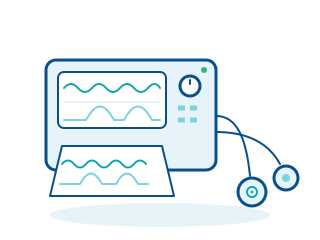
مراقبة نبض الجنين وانقباضات الرحم
يسجّل جهاز مراقبة الجنين (تخطيط قلب الجنين والانقباضات، CTG) في الوقت نفسه معدل ضربات قلب الجنين وانقباضات رحم الأم. ويُستخدم في رعاية الحمل وأثناء المخاض لمراقبة سلامة الجنين.
تعمل في غرفة العمليات أجهزة كثيرة معًا بشكل وثيق: فجهاز التخدير يُبقي المريض مخدَّرًا بأمان، وجهاز الجراحة الكهربائية يقطع الأنسجة ويوقف النزيف، ونظام التنظير يتيح إجراء العمليات طفيفة التوغل، ومصباح العمليات يوفّر رؤية مثالية. وعند الشراء يكون تخطيط الغرفة وإمداد الغازات وإعادة المعالجة والتدريب حاسمة بقدر تقنية الجهاز نفسها. يشرح هذا القسم أنواع الأجهزة الأساسية ويبيّن ما ينبغي مراعاته عند الاختيار والشراء.

ضبط الغازات والتهوية والمراقبة أثناء التخدير
تقوم أجهزة التخدير (محطات عمل التخدير) بضبط جرعات الأكسجين والهواء وغازات التخدير، وتهوية المريض أثناء الجراحة، ومراقبة غازات التنفس باستمرار.
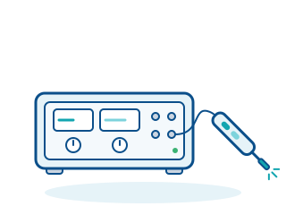
القطع والتخثير بالتيار عالي التردد
تولّد أجهزة الجراحة الكهربائية تيارًا متناوبًا عالي التردد يقطع الأنسجة من دون نزيف يُذكر ويغلق الأوعية الدموية عن طريق التخثير.
كاميرا وإضاءة وشاشة للجراحة طفيفة التوغل
يتكوّن نظام التنظير من منظار وكاميرا ومصدر ضوء وشاشة وأجهزة مساعدة؛ ويتيح التشخيص وإجراء العمليات عبر فتحات الجسم الطبيعية أو شقوق صغيرة.
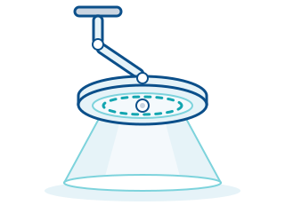
إضاءة قليلة الظلال ودقيقة الألوان لحقل الجراحة
تضيء مصابيح العمليات حقل الجراحة بسطوع عالٍ وظلال قليلة وألوان دقيقة من دون تسخين يُذكر للأنسجة؛ وتُثبَّت في السقف أو الجدار أو على حامل متنقل ويمكن توجيهها بحرية.
تتدخل الأجهزة العلاجية مباشرة في وظائف الجسم: فهي توفر التنفس الاصطناعي، وتعطي الأدوية بجرعات محددة، وتنقي الدم، أو توقف اضطرابات نظم القلب الخطيرة. ولأن الأخطاء هنا قد تعرض المرضى للخطر فوراً، تُفرض متطلبات عالية على أنظمة الإنذار والموثوقية وتدريب المستخدمين. في هذه الفئة ستتعرفون على أهم مجموعات الأجهزة في العناية المركزة وطب الطوارئ والعلاج البديل للكلى.
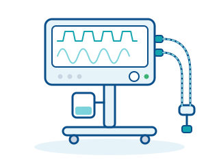
دعم التنفس أو تولّيه آلياً بالكامل
يتولى جهاز التنفس الاصطناعي عملية التنفس أو يدعمها لدى المرضى غير القادرين على التنفس بشكل كافٍ بأنفسهم. وهو يدفع خليطاً من الهواء والأكسجين إلى الرئتين بضغط وحجم محكومين.

إعطاء دقيق للأدوية والسوائل
تضخ مضخات التسريب السوائل والأدوية إلى الجسم بمعدل محكوم وقابل للضبط، عادةً عبر وصول وريدي. أما مضخات المحقنة فهي مصممة للأحجام الصغيرة والأدوية عالية الفعالية.
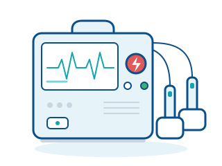
صدمة كهربائية لعلاج اضطرابات نظم القلب المهددة للحياة
يوجّه جهاز إزالة الرجفان صدمة كهربائية محكومة إلى القلب لإنهاء اضطرابات النظم المهددة للحياة مثل الرجفان البطيني. وحسب التصميم، يمتد النطاق من جهاز إزالة الرجفان الخارجي الآلي (AED) لغير المختصين إلى الأجهزة اليدوية المزودة بشاشة للكوادر الطبية.
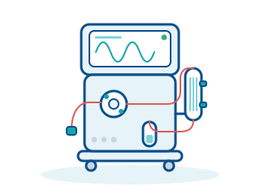
تنقية الدم كعلاج بديل للكلى
يتولى جهاز غسيل الكلى عند الفشل الكلوي إزالة السموم والماء الزائد من الدم. ويُمرَّر الدم خارج الجسم عبر مرشح تُزال فيه الفضلات والسوائل الفائضة.
تشمل تقنيات طب الأسنان جميع الأجهزة المستخدمة في عيادات الأسنان وتقويم الأسنان وجراحة الفم والوجه والفكين ومختبرات الأسنان. ويشمل ذلك وحدات العلاج والتصوير السني والطبعات الرقمية وإعادة معالجة الأدوات. ويرتبط كثير من هذه الأجهزة بعضها ببعض ارتباطاً وثيقاً، ولذلك تكتسب الواجهات ومتطلبات النظافة أهمية خاصة عند الشراء.

محطة العمل المركزية في عيادة الأسنان
تجمع وحدة علاج الأسنان بين كرسي المريض والأدوات وإمداد الماء والهواء والشفط والإضاءة في محطة عمل واحدة، وهي قلب كل غرفة علاج في عيادة الأسنان.
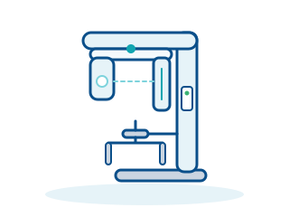
صورة شاملة للفكين في لقطة واحدة
ينتج جهاز الأشعة البانورامية صورة شاملة للفكين العلوي والسفلي وجميع الأسنان والمفاصل الصدغية الفكية والجيوب الفكية في صورة واحدة، وهو أهم فحص تشخيصي شامل في طب الأسنان.
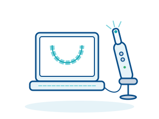
طبعة رقمية بدلاً من ملاعق الطبعات
يلتقط الماسح الضوئي داخل الفم الأسنان واللثة بصرياً وينتج منها نموذجاً رقمياً ثلاثي الأبعاد، ليحل محل الطبعة التقليدية بمواد الطبع.
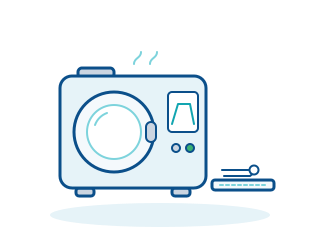
تعقيم بالبخار للأدوات والقبضات
يعقّم أوتوكلاف الأسنان الأدوات والقبضات المستقيمة والزاوية بالبخار المائي المشبع تحت الضغط. وتستطيع أجهزة الفئة B تعقيم المواد المغلفة والمجوفة والمسامية بشكل موثوق.
تتبع إعادة معالجة الأجهزة الطبية سلسلة ثابتة: فبعد التنظيف الأولي – مع معالجة مسبقة في حمام الموجات فوق الصوتية عند الحاجة – تُنظَّف الأدوات وتُطهَّر آليًا في جهاز الغسل والتطهير، ثم تُفحص وتُغلَّف وتُختم وتُعقَّم في جهاز التعقيم بالبخار. ويجب التحقق من صحة كل خطوة وتوثيقها، لأن الثغرات في إعادة المعالجة تعرّض المرضى للخطر وتخالف المتطلبات القانونية. يشرح هذا القسم الأجهزة الأساسية لإعادة المعالجة ويبيّن ما ينبغي مراعاته عند الاختيار والشراء.
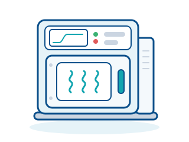
التعقيم بالبخار المشبع تحت الضغط
تستخدم أجهزة التعقيم بالبخار (الأوتوكلاف) البخار المشبع المضغوط للقضاء على جميع الكائنات الدقيقة بما فيها الأبواغ على الأدوات المغلّفة، وهي الطريقة القياسية للتعقيم في المستشفيات والعيادات.

تنظيف آلي وتطهير حراري
تنظّف أجهزة الغسل والتطهير الأدوات وتطهّرها آليًا ضمن برنامج مُتحقَّق من صحته، وبذلك تحل محل إعادة المعالجة اليدوية المعرّضة للأخطاء.
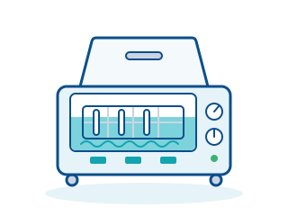
تنظيف أولي بالتكهّف في حمام سائل
تستخدم أجهزة التنظيف بالموجات فوق الصوتية موجات صوتية عالية التردد في حمام تنظيف لإزالة حتى الأوساخ العنيدة من مفاصل الأدوات وأخاديدها وتجاويفها، وتكمّل إعادة المعالجة الآلية.
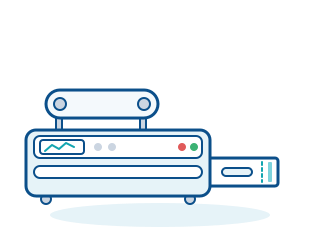
إغلاق محكم ضد الميكروبات لأكياس التعقيم
تلحم أجهزة الختم أكياس ولفائف الورق والفيلم لتكوين حاجز معقّم محكم ضد الميكروبات، بحيث تبقى الأدوات معقّمة من التعقيم حتى الاستخدام.
جرّبوا مصطلحًا آخر أو أعيدوا ضبط عامل التصفية.
نقدّم لكم استشارة محايدة تجاه الشركات المصنّعة، ونقارن عروض الأسعار، ونرافق عملية التوريد.
اطلب استشارة